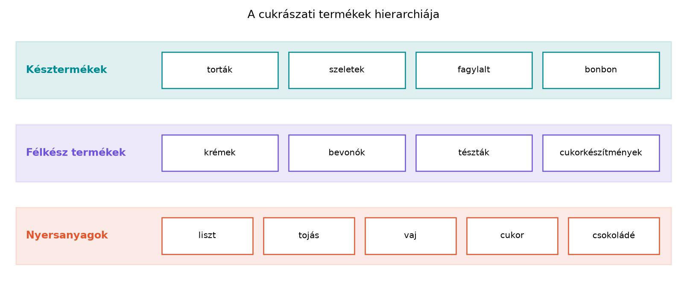
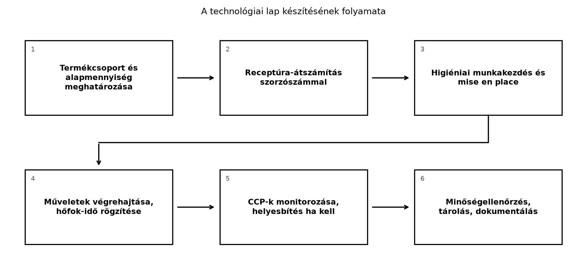

Egy cukrászüzemben reggel egyszerre kell előkészíteni egy esküvői Dobos tortát, egy tálca linzert, egy fagylaltkeveréket és egy gluténmentes kockát. Mindegyik termék más nyersanyagcsoportból, más hőmérsékleti szabállyal és más készültségi fokon épül fel. Aki csak recepteket gyűjt, könnyen eltéved. Aki viszont csoportokba rendezi a termékeket, tudja, hogy a piskótalap félkész termék, a tortakrém is félkész termék, és a kész torta csak akkor lesz biztonságos és jó minőségű, ha mindkettő technológiai lapja rendben van. Ez az alfejezet közös nyelvet és egységes rendszert ad a későbbi fejezetek technológiai lapjaihoz.
Képzeljük el a cukrászati termékeket fa szerkezetben. Alul vannak a nyersanyagok: liszt, tojás, tej, vaj, cukor, csokoládé, gyümölcs. Középen vannak a félkész termékek: krémek, bevonók, tészták, cukorfőzetek. Felül vannak a késztermékek: torta, szelet, teasütemény, fagylalt, bonbon. Egy késztermék több félkész termékből épülhet fel, és minden szinten más a hibaforrás.

A termékfa azért fontos, mert a technológiai lap nem csak a késztermékre készülhet. A félkész terméknek is van saját anyaghányada, műveleti sora, kritikus pontja és eltarthatósági ideje. Ha a krém tönkremegy, a torta sem menthető meg.
Definíció. - Félkész termék: olyan, további feldolgozásra szánt cukrászati készítmény, amely önmagában általában nem kerül fogyasztóhoz, hanem más félkész termékekkel összeállítva alkot készterméket, vagy további művelettel (bevonás, töltés, sütés) alakul késztermékké. Példa: piskótalap, főzött sárgakrém, temperált csokoládé, fondán. - Késztermék: a vendégnek eladható, fogyasztható, a forgalomba hozatal feltételeinek megfelelő cukrászkészítmény. Példa: szelet, teasütemény, fagylaltkehely, bonbon. - Termékcsoport: olyan gyűjtőfogalom, amely a nyersanyagok, a technológiai műveletek, a romlási kockázatok és a minőségi jellemzők szerint rendezi a cukrászati termékeket. A termékcsoport meghatározza, hogy milyen hűtést, csomagolást, allergénjelölést és eltarthatósági időt kell alkalmazni.
A cukrászüzemben a termékcsoportok ismerete a mindennapi munkaszervezés alapja. Az alábbi táblázat összefoglalja a könyvben tárgyalt fő csoportokat, a tipikus félkész vagy kész jelleget, a legfontosabb kockázatot és azt, hogy melyik későbbi alfejezet tanítja a technológiát.
| Főcsoport | Csoport | Példák | Jelleg | Kiemelt kockázat / CCP | Későbbi alfejezet |
|---|---|---|---|---|---|
| Cukorkészítmények | cukoroldatok, fondán, karamell | áztatószirup, fondán, grillázs | félkész | forró cukor okozta égés; cukorfőzés hőfoka | A cukorfőzés alapjai: nyersanyagok, tisztaság, kristályosodás megelőzése |
| Bevonó anyagok | csokoládébevonó, fondán, zselé, ganache | temperált étcsokoládé, tükörbevonó | félkész | temperálás, tejes bevonók hűtési lánca | Fondán melegítése, hígítása és felhasználása bevonásra |
| Töltelékek | gyümölcstöltelék, tojáskrém, tejszínkrém, mousse | főzött sárgakrém, vajkrém, csokoládémousse | félkész | tej-tojás hőkezelés, gyors hűtés | Tojáskrémek I: főzött sárgakrém és vaníliakrém |
| Tartósított gyümölcsök | dzsem, gyorsfagyasztott, alkoholos gyümölcs | ribizli dzsem, gyorsfagyasztott málna | félkész | mikroba, cukortartalom-változás | Gyümölcsök előkészítése, gyorsfagyasztás és vízelvonás |
| Tészták és kisült félkész termékek | omlós, felvert, élesztős, leveles | linzerkorong, piskótalap, leveles lap | félkész | sütési maghőmérséklet; nyers tojásos tészta keresztszennyezése | Zsiradékkal lazítás és az omlós tészták csoportosítása, Habbal lazítás és a felvert tészták rendszere |
| Késztermékek | uzsonna-, teasütemény, torta, szelet, fagylalt, bonbon, tányérdesszert | Dobos torta, linzer, tejszínes kocka, bonbon | kész | fogyasztói allergén, hűtési lánc, tömeg, eltarthatóság | Kikészített sütemények és torták: jellemzők és tortakészítési műveletek, A fagylalt összetevői és csoportjai |
A táblázatban a „CCP” a kritikus szabályozási pontot jelenti, amelyet a HACCP a cukrászatban: CCP-k, hőmérsékletnapló és helyesbítő tevékenység alfejezetben tanultunk. Egy félkész termék lehet egyszerre több kockázatcsoportba is sorolható; például a főzött sárgakrém tej- és tojáskrém egyben, ezért a technológiai lapján a tej és a tojás allergénként, a hőkezelés pedig CCP-ként szerepel.
A cukrászati szaknyelvben sok terméknek van hagyományos magyar neve és nemzetközi (francia vagy angol) neve. Az első előforduláskor a könyv a magyar nevet használja, majd zárójelben adja a nemzetközi változatot. Ez segíti a szakirodalomban való keresést és az idegen nyelvű munkakörnyezetben való eligazodást.
Példák: - felvert tészta (génoise / sponge) - forrázott tészta (pâte à choux) - vajas, leveles tészta (feuilletage) - főzött sárgakrém (crème pâtissière) - tojáshab (meringue) - temperálás (tempering) - áthúzó ganache (ganache à glacer) - tükörbevonó (glaçage miroir) - dermesztés (chilling, setting)
A hagyományőrző magyar termékneveknél – Dobos torta, Eszterházy torta, Rigó Jancsi, krémes, Somlói galuska, zserbó/Gerbeaud-szelet, pozsonyi kifli, beigli – a könyv egységes írásmódot használ. Ha egy név helyesírása vitatott, például beigli/bejgli vagy Eszterházy/Esterházy, az alfejezetben egységesen az egyik változatot használjuk, és első előforduláskor jelezzük a másik változatot.
A technológiai lap a cukrászüzemben a termelés vezérlő dokumentuma. Egyszerre receptúra, munkautasítás, HACCP-ellenőrző lap és minőségi követelmény. Ha a lap rendezett, egy új dolgozó vagy tanuló is biztonságosan el tudja készíteni a terméket.
Szabály. A technológiai lapot mindig a termelés megkezdése előtt kell értelmezni, a termelés közben a mért hőfokokkal és időkkel kiegészíteni, a termelés után pedig az eredmény minőségellenőrzésével együtt dokumentálni.
A könyvben használt technológiai lap mezői a következők:
| Mező | Magyarázat | Példa |
|---|---|---|
| Termék neve, termékcsoportja | egyértelmű azonosítás, besorolás | Főzött sárgakrém; főzött tej-tojás krém |
| Alapmennyiség | mire vonatkozik az anyaghányad | 1 kg kész krém |
| Anyaghányad táblázat | nyersanyagok, nettó/bruttó tömeg, megjegyzés, összesítő sor | Tej 700 g, tojássárga 120 g |
| Eszközök, gépek | biztonsági korlátot igénylő gépek megnevezése | habüst, lapátkeverő, indukciós főzőlap |
| Műveleti sorrend | számozott lépések, sorrend, hőfok, idő | 1. A tejet 70 °C-ra melegíteni |
| Kritikus pontok, technológiai kulcspontok | CCP-k, kritikus határok, monitorozás, helyesbítés | főzés 85 °C, 5 perc; gyors hűtés |
| Allergének | a 14 jelölendő allergéncsoport szerint, keresztszennyeződés | tej, tojás; gluténmentes változatnál keményítő ellenőrzése |
| Minőségi jellemzők | forma, méret/tömeg, felület, metszet, szín, íz, illat, állag | sima, fényes, csomómentes |
| Tárolás, eltarthatóság, expediálás | hűtési hőfok, idő, csomagolás, jelölés | +5 °C alatt, 24 h (tanulási példa) |
A technológiai lap készítésének sorrendjét az alábbi folyamatábra mutatja.

Fontos, hogy a technológiai lap nem „kőbe vésett” recept, hanem az adott üzemre, berendezésre és alapanyag-beszállítóra igazított munkadokumentum. A hőfok- és időértékek tájékoztató jellegűek, és a gyártói adatlap, a berendezés teljesítménye, a receptúra, valamint a hatályos útmutatók szerint eltérhetnek.
A hagyományőrző magyar termékeknél különösen fontos a forrás megjelölése. Egy Dobos torta vagy zserbó esetében a „pontos eredeti” arány nem mindig rekonstruálható egyetlen hiteles dokumentumból. A könyv ezért nem állítja, hogy egy receptúra az eredeti, ha erre nincs ellenőrzött forrás.
Szabály. - Ha egy hagyományőrző termék receptúráját szakmai testület receptgyűjteményéből, cukrászattörténeti forrásból vagy iskolai törzsreceptből vettük, a technológiai lap fölött ezt meg kell nevezni, és jelölni kell az ellenőrzési igényt. - Ha a pontos eredeti arány nem biztos, a technológiai lapra azt kell írni: „az üzemben/szakirodalomban elterjedt tanulási receptúra, nem hitelesített eredeti recept.” - A helyi üzemi receptúra akkor használható, ha azt belső dokumentumként, azonosítható módon rögzítik, és a termék megnevezése nem vezeti félre a fogyasztót.
Ez azért fontos, mert a fogyasztó számára a „Dobos torta” név elvárást hordoz. Ha az üzem módosítja az arányokat, például kevesebb vajat vagy más csokoládét használ, az lehet elfogadható, de a minőségi eltérés vagy az allergén-összetétel változása megjelenhet a vendégpanaszban. A technológiai lapon ezért a forrás és a helyi módosítás egyaránt szerepeljen.
A következő útmutató a technológiai lap szerkezetét mutatja be egy főzött sárgakrémen (crème pâtissière) keresztül. Ezt a félkész terméket a könyv a Tojáskrémek I: főzött sárgakrém és vaníliakrém alfejezetben tárgyalja részletesen, itt most a lapformátum szemléltetésére szolgál. A mennyiségek tanulási példák, nem gyártói specifikációk.
Technológiai lap.
Termék neve, termékcsoport, alapmennyiség.
Főzött sárgakrém (crème pâtissière); főzött tej-tojás krém, félkész
töltelék; alapmennyiség: 1 kg kész krém.
Anyaghányad táblázat.
| Nyersanyag | Mennyiség (g) | Megjegyzés |
|---|---|---|
| Tej (2,8% zsír) | 700 | friss, hűtött, forralás előtt ellenőrzött |
| Tojássárgája | 120 | ép héjú, szeparált tojásból |
| Kristálycukor | 140 | |
| Vaníliás pudingpor vagy étkezési keményítő | 40 | gluténmentes változathoz tisztított kukoricakeményítő; búzakeményítő esetén glutén |
| Vaj (82% zsír) | 20 | hideg, kockázott |
| Összes betöltött tömeg | 1020 | kb. 20 g főzési veszteséggel; kész krém kb. 1000 g |
Eszközök, gépek.
Vastag aljú habüst, gumilapát, kézi habverő, finom szita, digitális
maghőmérő, jégfürdő, tiszta zárható edény, címke.
Műveleti sorrend.
Kritikus pontok és technológiai kulcspontok.
| Lépés | Veszély | Megelőzés | Kritikus határ (tanulási példa) | Monitorozás | Helyesbítő tevékenység | Dokumentum |
|---|---|---|---|---|---|---|
| Krémfőzés | túlélő kórokozó (pl. Salmonella) | folyamatos keverés, maghőmérő használata | 85 °C, legalább 5 perc (ellenőrizendő) | hőmérő, óra, szemrevételezés | tovább főzni, ha nem érte el a hőfokot; odaégett tétel selejtezése | főzési napló |
| Gyors hűtés | spórás baktériumok szaporodása, toxin | jégfürdő, lapos edény, felületvédelem | tanulási példa: 60 °C-ról 20 °C-ra ≤ 2 h, majd ≤ +5 °C további ≤ 4 h alatt (nemzetközi szakirodalmi példa; ellenőrizendő: NÉBIH-útmutató, HACCP-terv) | hőmérő, időmérés | gyorsabb hűtés jégfürdővel; ha túllépte az időt, a tételt elkülöníteni és felelős döntést hozni | hűtési napló |
Allergének.
A 14 jelölendő allergéncsoportból: tej,
tojás. A vaníliás pudingpor vagy étkezési keményítő
glutént tartalmazhat, ha búzakeményítőből készült.
Gluténmentes változatnál csak gluténmentes, keresztszennyeződéstől
mentes keményítőt használjunk. A közös eszközökkel (habverő, tál) való
keresztszennyeződés a gluténérzékeny vendég esetében kockázat
lehet.
Minőségi jellemzők.
Sima, fényes, csomómentes krém; halványsárga szín; tejes-vaníliás illat
és íz; hűtés után kocsonyásan vágató, de nem gumiszerű; a nyelvről
nehezebben húzható le, mint egy hideg tej, mert a keményítő megkötötte a
vizet.
Tárolás, eltarthatóság, expediálás.
+5 °C alatt, zárt edényben, címkével, elkülönítve tárolva. Eltarthatóság
tanulási példaként 24 óráig (ellenőrizendő: üzemi HACCP és gyártói
útmutató szerint). Fagyasztással a szerkezet károsodhat, ezért a főzött
sárgakrémet általában nem fagyasztjuk.
A technológiai lap akkor teljes, ha a termelés közben a mért hőfokok és időpontok bekerülnek, és a lap aláírással lezárul. A tisztán kitöltött lap a későbbi hatósági ellenőrzésen vagy vendégpanasz esetén is bizonyítja, hogy az üzem az előírt lépéseket elvégezte.
A technológiai laphoz kapcsolódó minőségellenőrzés a termék érzékszervi vizsgálatát és a tömegellenőrzést jelenti. A fenti főzött krémnél nézzük meg a felületet (nincs bőrösödés, csomó), kóstoljuk meg (nincs nyers keményítőíz, nem égett), és mérjük le a kész tömeget. Ha a betöltött tömeg 1020 g volt, és a kész krém 1000 g körül van, a főzési veszteség kb. 2%. Ha ennél lényegesen kevesebb, akkor túl hosszú volt a főzés, vagy túl magas hőfokot használtunk. A főzött krém minőségét a következő hibatáblázat segíti.
| Tünet | Ok | Megelőzés/javítás |
|---|---|---|
| Csomós a krém | a keményítő nem oldódott fel, a tojásos keverék nem volt csomómentes | szitán átszűrni; legközelebb a hideg folyadék egy részével kikeverni a keményítőt |
| Leégett, karamellíz a krém alja | túl magas hőfok, nem folyamatos keverés | vastag aljú edény, mérsékelt hőfok, folyamatos keverés; az égett tétel selejt |
| Megbőrösödik a felülete | hűtés közben nem takartuk le fóliával | közvetlenül a krémre fólia; hűtés után alaposan átkeverni, ha még menthető |
| Híg, nem áll össze | a keményítő nem forrt meg kellő ideig, vagy a hőfok nem érte el a 85 °C-ot | tovább főzni, ha még a biztonsági határon belül van; ellenkező esetben selejtezni |
| Tojásízű, gumis | túl sok tojássárga, vagy túlfőzés | arány módosítása; hőfok-idő pontos betartása |
Egy kisebb cukrászda új dolgozója megkapta a házi „vaníliakrém” kézzel írt lapját, amelyen csak annyi állt: „tej, tojás, cukor, pudingpor; főzd sűrűre”. A dolgozó a krémet felforralta, majd a meleg krémből 10 kg-ot egy mély műanyag vödörben tett be a hűtőbe. A krém másnapra a közepén még langyos volt, a felülete megbőrösödött, az alja kicsapódott. A hűtő-hőmérsékletnapló szerint a hűtő +6 °C-on állt. A vezető a tételt visszatartotta, és a krémet selejtezte, mert a hűtési görbét nem tudta igazolni. Az eset után bevezették az egységes technológiai lapot, amelyen a gyors hűtést CCP-ként kellett vezetni, és a krémet lapos edénybe, jégfürdővel kellett hűteni. A tanulság: nem elég a jó recept, a technológiai lap akkor védi a vendéget és az üzemet, ha a kritikus lépéseket mérhetővé teszi.
1. feladat (A).
Nevezz meg legalább négy félkész termékcsoportot, és mindegyikhez adj
egy konkrét példát.
2. feladat (A).
Magyarázd el, mi a különbség a félkész és a késztermék között, és miért
kell a félkész terméknek is saját technológiai lapja.
3. feladat (B).
Állíts össze technológiai lap anyaghányad táblázatot a következő
tanulási linzerkoszorúhoz, amelyből 10 db, egyenként kb. 52 g-os nyers
korong készül. Nyersanyagok: vaj 150 g, porcukor 100 g, tojássárgája 20
g, liszt 250 g, só 1 g. Számítsd ki az összes tömeget, és add meg az
alapmennyiséget is.
4. feladat (B).
Egy tejszínes krémes torta gyártási sora: (1) piskóta sütése, (2) főzött
tejszínkrém készítése, (3) összeállítás, (4) dermesztés hűtőben, (5)
felszeletelés, (6) értékesítés. Melyik lépések jöhetnek szóba CCP-ként?
Indokold a tej, tojás vagy tejszín jelenléte alapján.
5. feladat (C).
A Dobos tortáról az egyik forrás szerint a vajkrémhez 6 tojássárgájára
250 g cukor szükséges, egy másik szerint 4 tojássárgájára 180 g cukor. A
tanuló azt mondja, hogy „az eredeti recept az első”. Mi a helyes döntés
a technológiai lapon? Mit kell jelölni?
6. feladat (D).
Készítsd el a gyakorlati útmutatóban bemutatott főzött sárgakrémet 500 g
kész krémre átszámolva. Töltsd ki a technológiai lap mezőit, különösen a
főzési hőfok-időt és a gyors hűtési görbét. Értékeld a munkádat a
megadott minőségi szempontok szerint.
Önellenőrzés – válaszok
1. feladat – megoldás.
Például:
- Cukorkészítmények: fondán.
- Bevonó anyagok: temperált étcsokoládé.
- Töltelékek: főzött sárgakrém.
- Tészták és kisült félkész termékek: piskótalap.
2. feladat – megoldás.
A félkész termék további feldolgozásra vár, a késztermék a fogyasztónak
értékesíthető. A félkész terméknek is kell technológiai lapja, mert
romolhat, allergént hordozhat, kritikus hőkezelést igényelhet, és a
későbbi késztermék minősége, valamint biztonsága ettől függ.
3. feladat – megoldás.
Technológiai lap anyaghányad része:
| Nyersanyag | Mennyiség (g) | Megjegyzés | |—|—|—| | Vaj | 150 | hideg,
kockázott | | Porcukor | 100 | | | Tojássárgája | 20 | szeparált | |
Liszt | 250 | finomliszt | | Só | 1 | | | Összes tömeg
| 521 | 10 db nyers linzerkorong, kb. 52 g/db; sütés
után veszteséggel kell számolni |
Alapmennyiség: 10 db nyers linzerkorong (egyenként kb. 52 g).
4. feladat – megoldás.
A tejszínes krém készítése (2) a legerősebb CCP, ha tejet, tojást vagy
tejszínt hőkezelünk. A dermesztés hűtőben (4) szintén CCP lehet, mert a
hűtési láncot és a hőmérsékletet ellenőrizni kell. A piskóta sütése (1)
nem elsődlegesen mikrobiológiai CCP, de a sütési maghőmérséklet
technológiai kulcspont. Az összeállítás, szeletelés, értékesítés
általában GHP, de hosszú szobahőmérsékleten tartózkodás esetén a hűtési
lánc megszakadása veszélyt jelenthet.
5. feladat – megoldás.
Nem szabad azt állítani, hogy „az eredeti recept az első”. Csak akkor
lehet hitelesített eredetiként kezelni, ha ellenőrzött
cukrászattörténeti forrás vagy szakmai testület azt igazolja. A
technológiai lapra inkább azt kell írni: „a könyvben közölt, szakmailag
elterjedt tanulási receptúra, nem hitelesített eredeti recept; az
arányok üzemenként eltérhetnek.” Meg kell jelölni a forrástípust is.
6. feladat – megoldás.
A 1000 g-os technológiai lap 500 g-ra: szorzó
.
Tej 350 g, tojássárgája 60 g, cukor 70 g, keményítő/pudingpor 20 g, vaj
10 g. Összes betöltött tömeg: 510 g, kész krém kb. 500 g. A műveleti sor
változatlan, de a főzőedény kisebb, a jégfürdő is kevesebb jeget
igényel. A CCP-ket ugyanúgy kell mérni: 85 °C, 5 perc (tanulási példa,
ellenőrizendő), majd gyors hűtés 60 °C-ról 20 °C-ra legfeljebb 2 h, +5
°C alá 4 h alatt (tanulási példa). Értékelési szempontok: sima felület,
csomómentesség, kívánt tömeg, hűtési görbe betartása, dokumentáció.
A cukrászati termékeket félkész és késztermék-csoportokba soroljuk az alapján, hogy további feldolgozásra várnak-e, vagy közvetlenül a fogyasztóhoz kerülnek. A fő félkész csoportok: cukorkészítmények, bevonó anyagok, töltelékek, tartósított gyümölcsök, tészták és kisült félkész termékek. A késztermékek közé tartoznak az uzsonna- és teasütemények, torták, szeletek, bonbonok, fagylaltok és tányérdesszertek. A technológiai lap egységes mezőkkel dokumentálja a termék nevét, csoportját, alapmennyiségét, anyaghányadát, eszközeit, műveleti sorrendjét, CCP-it, allergénjeit, minőségi jellemzőit, tárolását és expediálását. A hagyományőrző terméknél a receptúra forrását nevezzük meg; ha az „eredeti” arány nem hitelesített, tanulási receptúraként kell jelölni, nem szabad eredetiként felírni. Továbbvitt eredmény. A technológiai lap mezőit és szerkezetét kötelezően alkalmazzuk a későbbi technológiai alfejezetekben: A cukorfőzés alapjai: nyersanyagok, tisztaság, kristályosodás megelőzése, Gyümölcstöltelékek, olajos magvas és tartós töltelékek, A cukrászati készítmények minősége, tömege és hibái, valamint Receptek, termékkészítés és munkahelyi kommunikáció idegen nyelven. A technológiai lap nem receptgyűjtemény, hanem higiéniai, HACCP- és minőségbiztosítási munkadokumentum is.